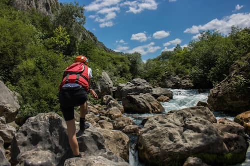

Founded in 1990, our company has guided thousands of adventurers down the river. We started with a single raft and a big dream! It has been a rough road to take but we kept pushing forward.
Founded in 1990, our company has guided thousands of adventurers down the river. We began with one raft and a big dream—and never looked back. Over the years, we have grown into a trusted name in white water rafting, known for thrilling rides and unforgettable experiences. Our expert guides ensure every trip is safe, exciting, and tailored to your comfort level. Whether you are chasing rapids or enjoying a scenic float, we provide top gear and passionate service. Join us to explore wild waters, connect with nature, and make memories that last a lifetime.

Over time, white water rafting gear advanced from heavy wooden and animal skin crafts to lightweight, durable rafts made with synthetic materials like hypalon and vinyl. Modern paddles and safety gear improved comfort, performance, and protection. These innovations enabled rafting on more challenging rapids worldwide and expanded the sport’s accessibility and popularity.